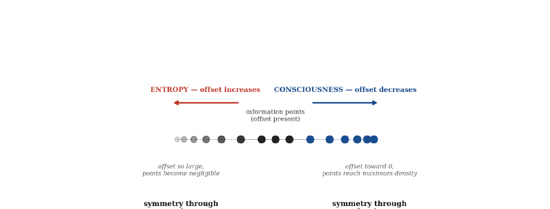
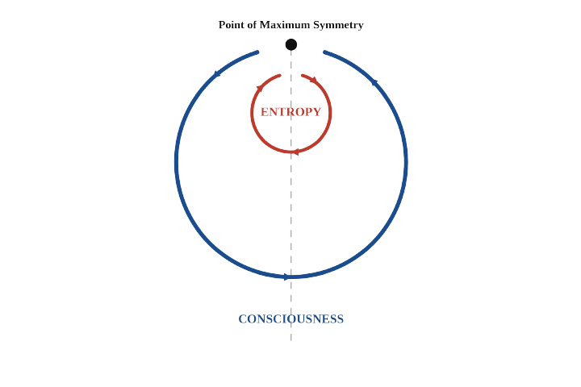
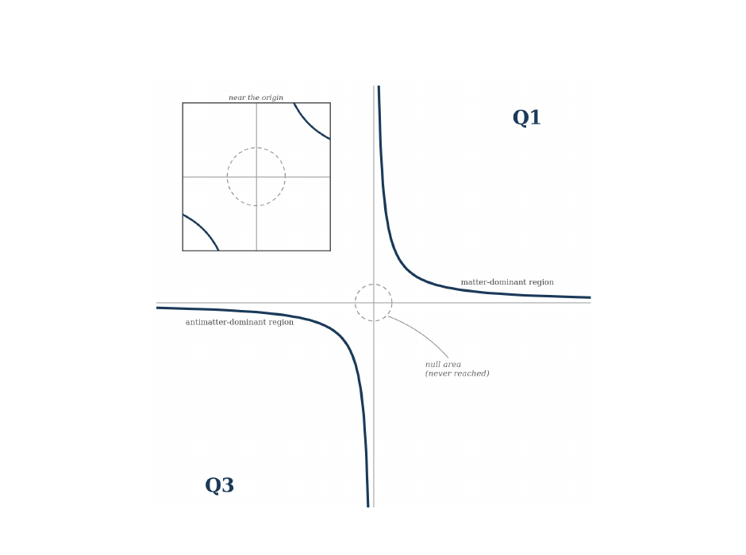
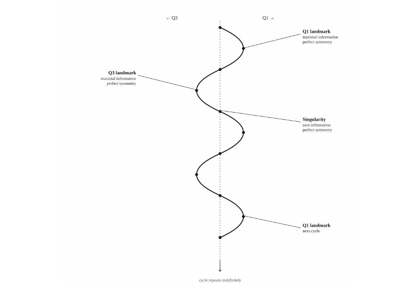
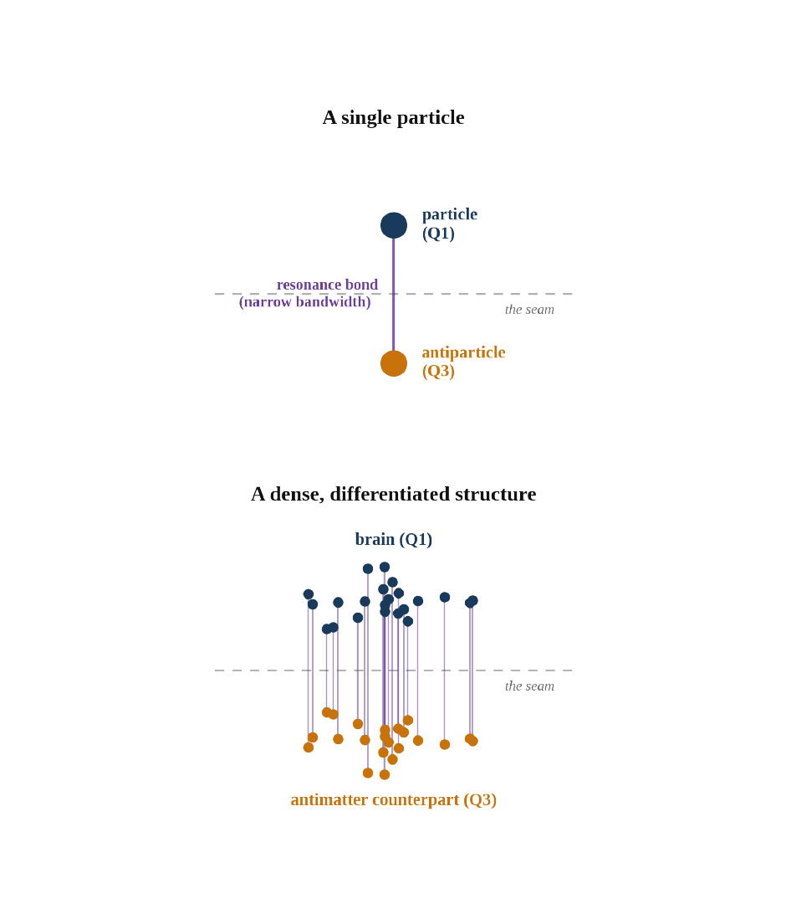
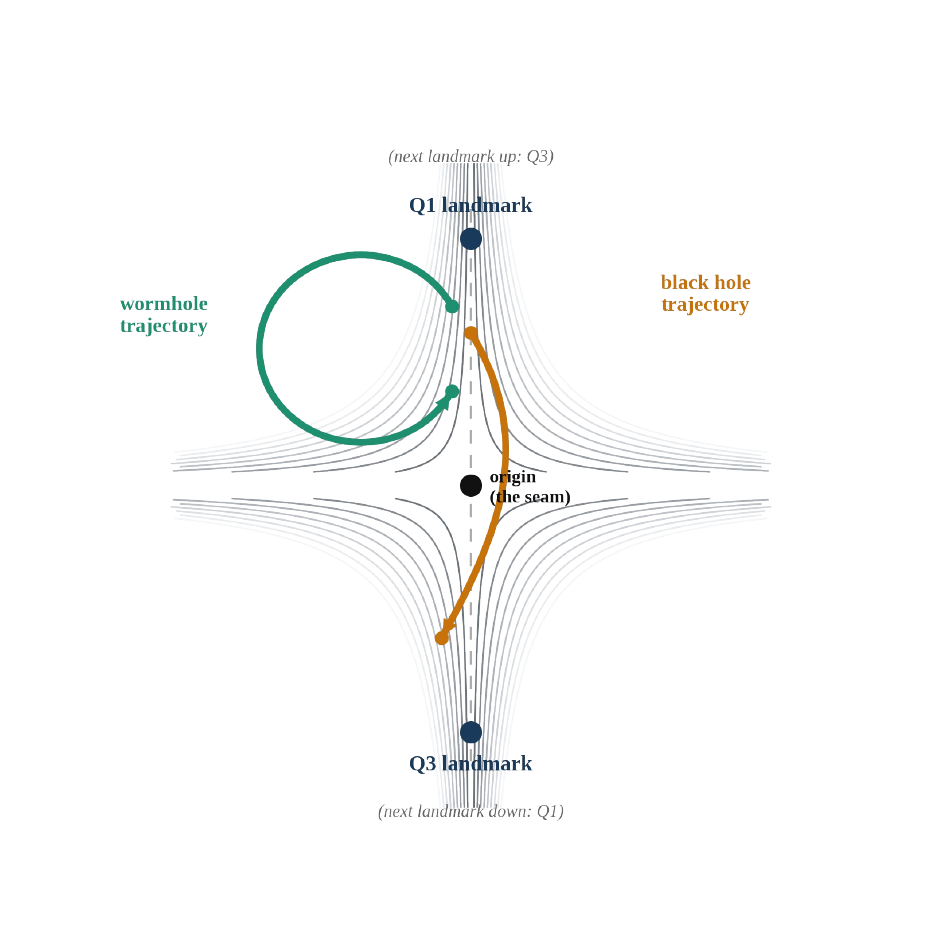

The Big Question
Imagine the universe is like a perfectly sealed room. Nothing can escape it — not light, not energy, not even information. If that is true, then the universe cannot simply expand forever without something balancing the books. Every stretch outward must eventually be answered by a contraction somewhere else. That simple idea — reality cannot leak — is the starting point of a bold new way of thinking about cosmology and consciousness.
This article walks you through that idea in everyday language. No advanced math required. We will explore why the universe might be cyclic (like a heartbeat that never stops), why there is a mirror region made mostly of antimatter, where dark energy might come from, and how consciousness itself could be woven into the fabric of spacetime.
1. Everything Is Information
The framework begins with a modern physics idea often summed up as “it from bit.” At the deepest level, matter, energy, and even spacetime itself can be thought of as patterns of information. There is no absolute smallest “bit” we can finally count — any unit we choose can, in principle, be divided further. So the theory works with relative units of information, labeled Tdomain with a subscript that tells you which domain you are measuring (physics, biology, geology, etc.).
What drives these informational pieces around? A single tendency: the push toward maximum symmetry. Symmetry here means balance and evenness. There are exactly two ways a system of informational points can reach perfect symmetry:
- Emptiness — when there is almost no information left, so there are no uneven relationships left to create imbalance.
- Maximum density — when every point is packed so tightly that the differences (offsets) between them shrink toward zero.
2. Entropy and Consciousness: Two Sides of the Same Coin
How does information move between the two extremes of emptiness and density? The theory proposes two reciprocal logics — two complementary processes that both seek symmetry, just in opposite directions.
Entropy is the familiar process that spreads things out. Hot coffee cools, gas expands to fill a room, order slowly turns into disorder. Entropy drives the system toward symmetry-through-emptiness.
Consciousness, in this picture, is the opposite motion. It is the process that pulls information together by strengthening “resonance bonds” between points as they draw closer. It drives the system toward symmetry-through-density. Living systems already do a version of this locally (Schrödinger called it “negentropy” — exporting disorder so they can keep their own internal order). The theory simply scales that idea up to the whole cosmos.
Entropy and consciousness are not enemies. They are partners taking turns, both serving the same deep drive toward symmetry. The degree of symmetry reached is tracked by a quantity I call absol. Absol increases by one each time the universe hits a perfect-symmetry landmark, and it can keep growing forever as cycles repeat.


3. One Singularity, Two Mirror Regions
The theory does not need two separate universes. Instead it proposes a single shared point — a singularity that acts like a seam. On one side of the seam is our region, called Q1, where ordinary matter dominates. On the other side is its structural twin, Q3, where antimatter dominates.
Zero and infinity meet at that seam. The simplest mathematical curve that captures this idea is the rectangular hyperbola:
Rotate it 180 degrees and it maps onto itself — perfect for two mirror regions. When the seam expands outward equally in all directions it forms a shape I call the pánta (Greek for “everything”).

4. Dimensions as a Coil
Instead of thinking of dimensions as a stack of flat layers, picture them as a coil or spring. Every time the coil crosses itself you find the singularity. Moving outward from a crossing is what we experience as the positive dimensions — “forward” and “now.” The preceding, more spread-out state is the negative side of the same coil.
From the vantage point of an observer one full turn further along the coil, our entire four-dimensional universe would look like just a preceding stage. We have no direct access to those higher turns — just as a flat cartoon character cannot step out into the third dimension.

5. Where Dark Energy Comes From
Each loop of the coil has a height that the theory reads as informational pressure — how tightly information is packed and how hard that packing pushes outward. Pressure is lowest right now (mid-cycle) and rises as the system approaches the next symmetry landmark.
While entropy is in charge, the system behaves like a gas and expands. When consciousness takes over, it behaves more like an organized liquid and begins to contract. Q1 and Q3 act together like a single thermodynamic piston. As our region expands under entropy, pressure can bleed across the seam from the mirror region. That extra push from Q3 is identified with the mysterious acceleration we call dark energy.
The expansion therefore speeds up while the cross-seam contribution is strongest, slows as the two regions approach balance, reaches a flat maximum at the landmark, and then reverses into contraction.
6. The Matter–Antimatter Mystery Solved?
Standard cosmology expects equal amounts of matter and antimatter to have been created in the early universe. Yet we see almost only matter. Where did the antimatter go?
In this framework it was never destroyed. It was simply sorted. At the beginning of a cycle, Q1 inherited the matter-dominant share and Q3 inherited the antimatter-dominant share. Global symmetry is preserved across the whole structure; it just does not hold inside one region alone.
Annihilation at the seam is what turns the cycle over. When the two shares meet, the built-up informational pressure is released and the system flips from contraction back into expansion — the event we traditionally call the Big Bang. Nothing is lost; the books simply balance and a new cycle begins.
7. Black Holes and Wormholes
Not every opening in spacetime is the same.
- Wormholes open and close entirely inside one region. They form like quantum fluctuations but collapse almost immediately because nothing outside is feeding them.
- Black holes (and white holes) are the two ends of the same gateway that passes through the singularity into the opposite region. From our side it looks like a black hole; from the other side the identical structure looks like a white hole. Its stability comes from staying connected to the standing pressure gradient between Q1 and Q3 — the same gradient responsible for dark energy.

8. Consciousness as Cosmic Resonance
Every particle is proposed to carry a standing resonance bond with its antimatter counterpart across the seam. Even a single particle therefore has a vanishingly small degree of awareness. The difference between a lonely particle and a human brain is not whether the resonance exists, but how much bandwidth is available to carry it.
A brain does not generate consciousness from nothing. Its dense, highly differentiated network of connections simply widens the channel so that a resonance that was already present can register as a full mind. Bandwidth depends on the richness and specificity of the connections, not merely on mass or volume.
At the largest scale, consciousness is the ordering process that resists entropy across an entire cosmic cycle. The complexity it accumulates is not erased when the cycle turns; it is carried forward in the resonance field into the next cycle.

9. The Great Cosmic Inversion
At the outer edge of the pánta the universe reaches the next landmark of perfect density-symmetry. Resonance bonds have been strengthening non-linearly (the closer the points get, the faster the approach — much like gravitational collapse). The system then undergoes what I call the Great Cosmic Inversion.
Q1 and Q3 swap roles. What was the matter-dominant region becomes the antimatter-dominant region of the next cycle, and vice versa. Annihilation at the seam releases the pressure and restarts expansion. Nothing is lost — only reorganized. The accumulated resonance (the bandwidth built up by consciousness across the previous cycle) is inherited rather than reset.
We cannot see the inversion from inside our own turn of the coil, any more than a two-dimensional being can perceive the third dimension. The argument for it is logical: a closed informational system driven by two reciprocal symmetry-seeking processes simply cannot behave otherwise than cyclically.
Putting It All Together
The entire framework rests on one premise: the universe is a closed system that cannot leak. From that single rule everything else follows — the coil of dimensions, the mirror regions, dark energy as cross-seam pressure, the sorting of matter and antimatter, black holes as inter-regional doorways, and consciousness as the density-seeking half of the universal drive toward symmetry.
In this picture the universe does not end in heat death or a final crunch that erases everything. It recurs. Information and the consciousness that rides with it are carried forward from cycle to cycle. The books always balance.
Reference Papers
🚧 Under Construction: Reference papers will be added here soon.